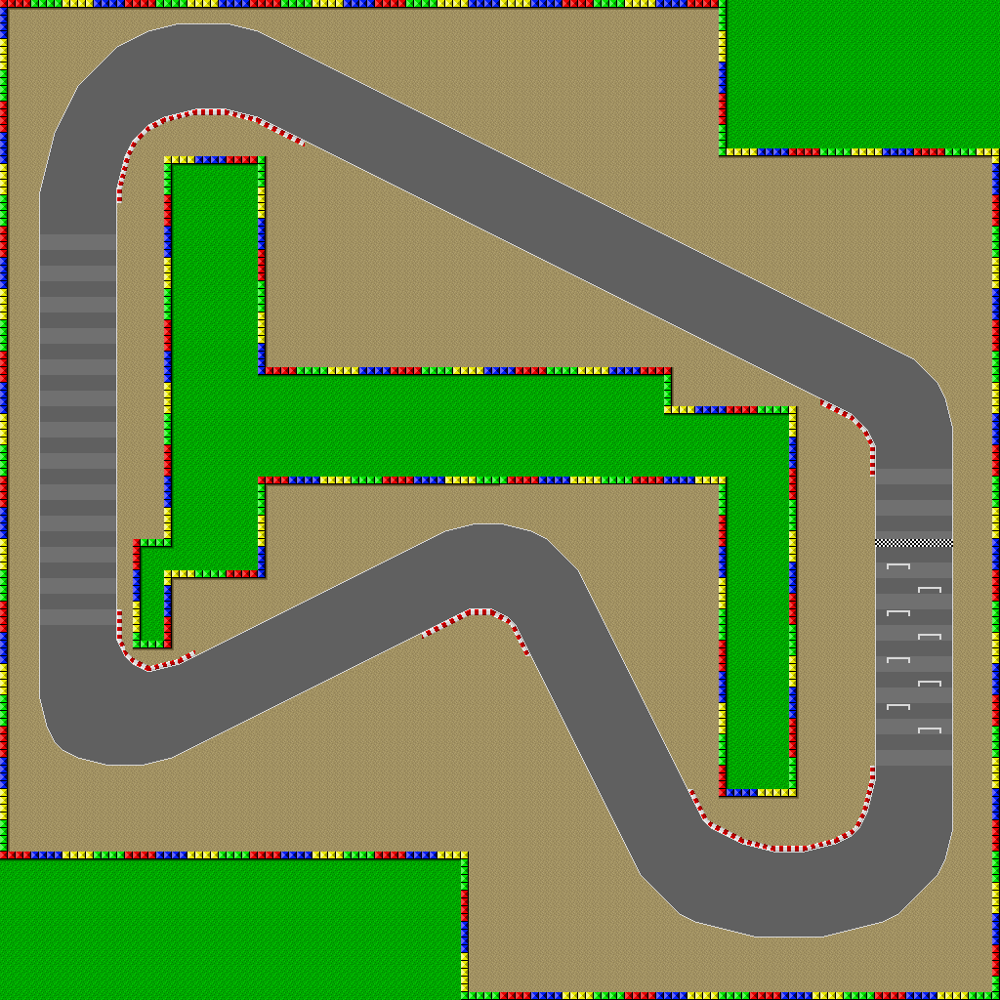
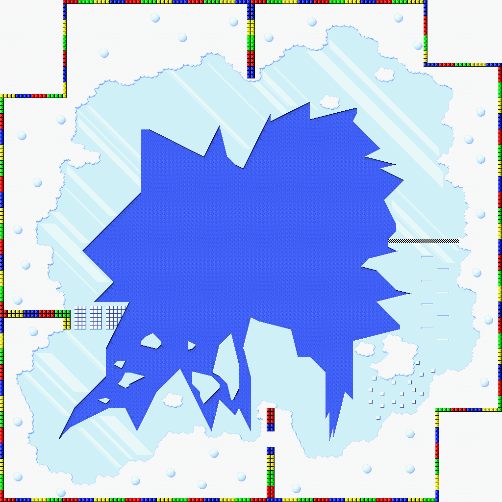

<!doctype html>
<meta charset=utf-8>
<meta name="viewport" content="width=device-width, initial-scale=1">
<html>
<head>

<title>Track Lines</title>

<link rel="icon" type="image/vnd.microsoft.icon"
     href="..\image\favicon.ico" />
<link rel="stylesheet" href="..\index.css">

</head>

<style>	
body {
	background-image: url("image/smk_bg.png");	
}
.trackox {
  background-color: white;
  width: 1034px;
  height: 1034px;
  border: 2px solid Black;
  padding: 2px;
  margin: 0px;
  text-align:center;
}
	
<body>
	
<div class="center trackbox">
<div class="center">
	






</div>
</div>
	
</body>

</html>
